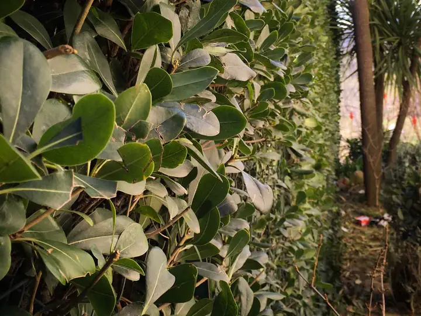

Talla de gespa
Puc intervenir regularment per a mantenir la seva gespa
Veure el servei (en francès)El vostre jardí té menester de ser curat? Necessita una ajuda puntual?

No deixi de contactar-me per a obtenir més informacions o fer un pressupost.
Puc intervenir regularment per a mantenir la seva gespa
Veure el servei (en francès)
Que em confiï la talla de la seva bardissa si aquesta aconsegueix agafar una dimensió inadequada
Veure el servei (en francès)
Per la tardor, el seu jardí en vesteix de fulles o una part del seu jardí necessita una neteja
Veure el servei (en francès)
Us ajudo amb el reg i us aconsello sobre les necessitats d’aigua del vostre jardí. Abans de regar, consulteu les restriccions d’aigua vigents al vostre municipi.
Veure el servei (en francès)
Us aconsello en la tria dels vegetals i planto els que compreu vosaltres.
Veure el servei (en francès)
Les flors i arbustes necessiten en manteniment particular, l’ajudo a fer-los créixer i a lluitar contre les malalties.
Veure el servei (en francès)


Perquè no té ni el temps, mi la capacitat de mantenir els afores de la seva casa, arriba el moment d’una ajuda puntual per aconseguir que la seva casa sigui cada dia més bonica.
La talla de la bardissa, de la gespa, la recollida de les fulles…. Retrobi el plaer de tenir uns afores bonics sense esforç. Vinc amb les meves eines, m’enduc les deixalles, i vostè, sempre amb l’esperit tranquil.
Poso les meves competències al seu servei.
Fa 11 anys que exerceixo de jardiner, després de 9 anys com a responsable de cultiu als hivernacles del Soler. Aporto els meus coneixements sobre la plantació i el manteniment de plantes i flors al vostre jardí.
A més del mantemiment, l’aconsellaré amb cura per a arranjar de la manera més adequada del seu jardí i l’ajudaré a triar les plantes més adaptades a la seva terra.
Li dóna l’ajuda puntual, pero de qualitat. Vinc amb material professional i enduré totes les deixalles. Que aprofiti d’um jardí net i ben arreglat quan hagi passat.
Consells sobre les feines del vostre jardí i novetats d’Un Coup de Pousse.